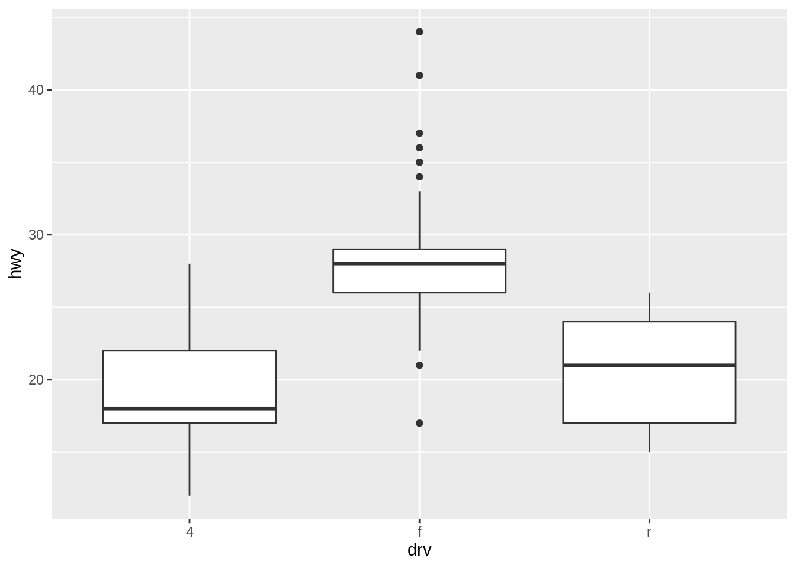
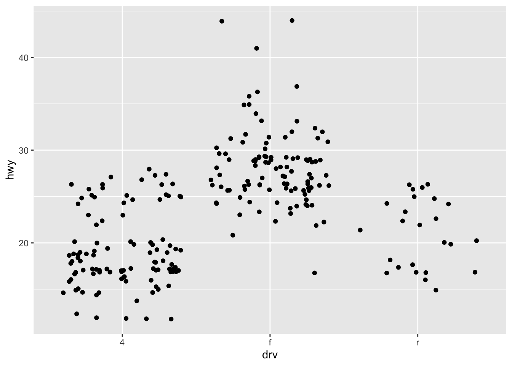
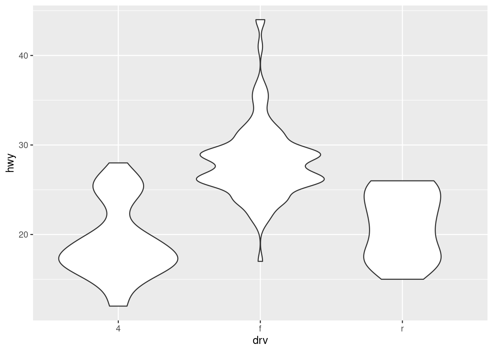
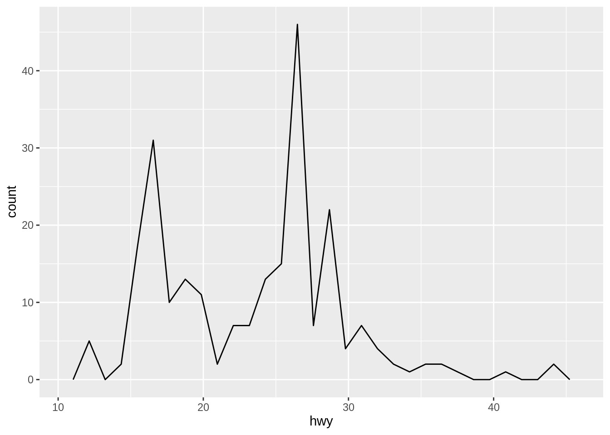
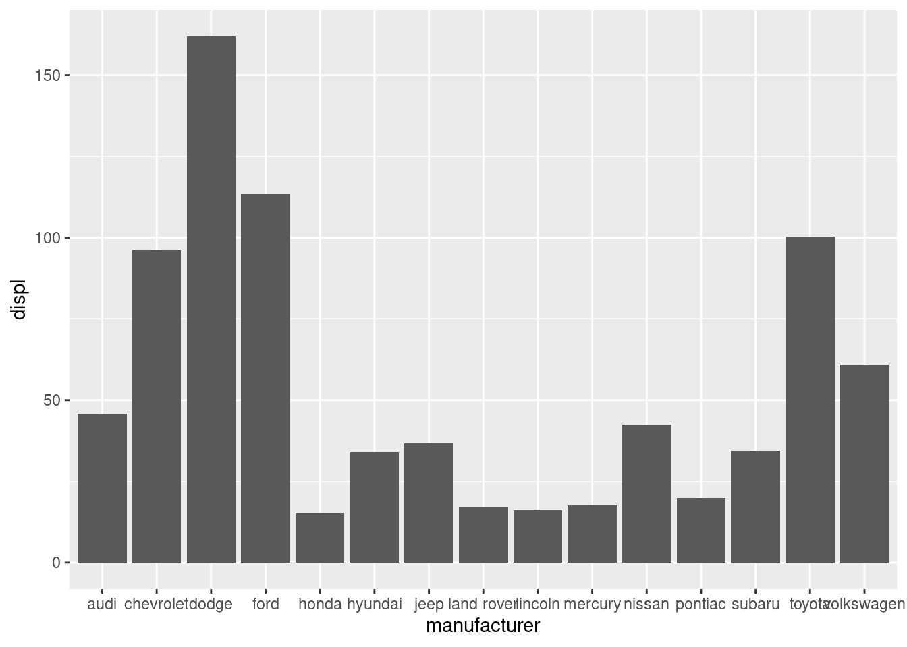
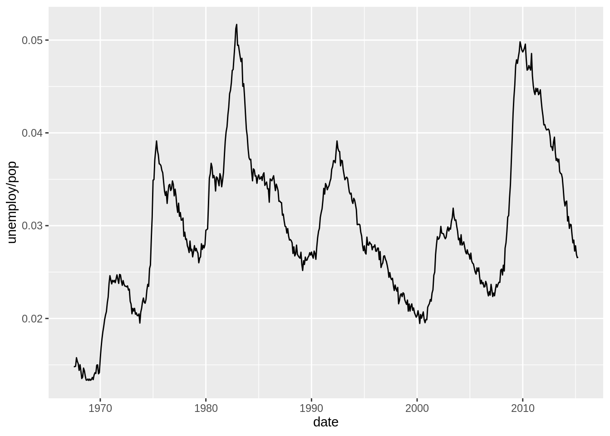
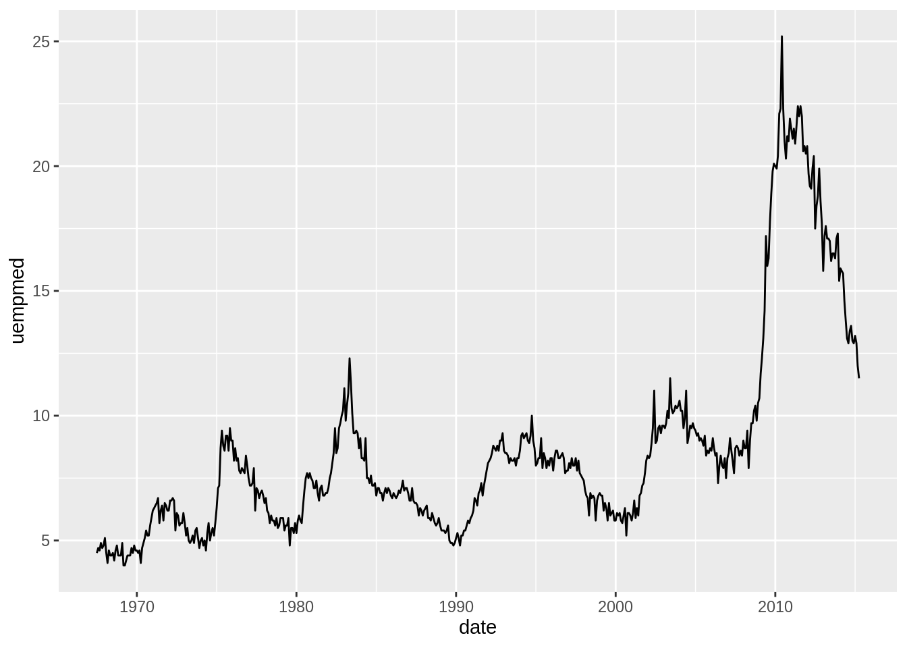
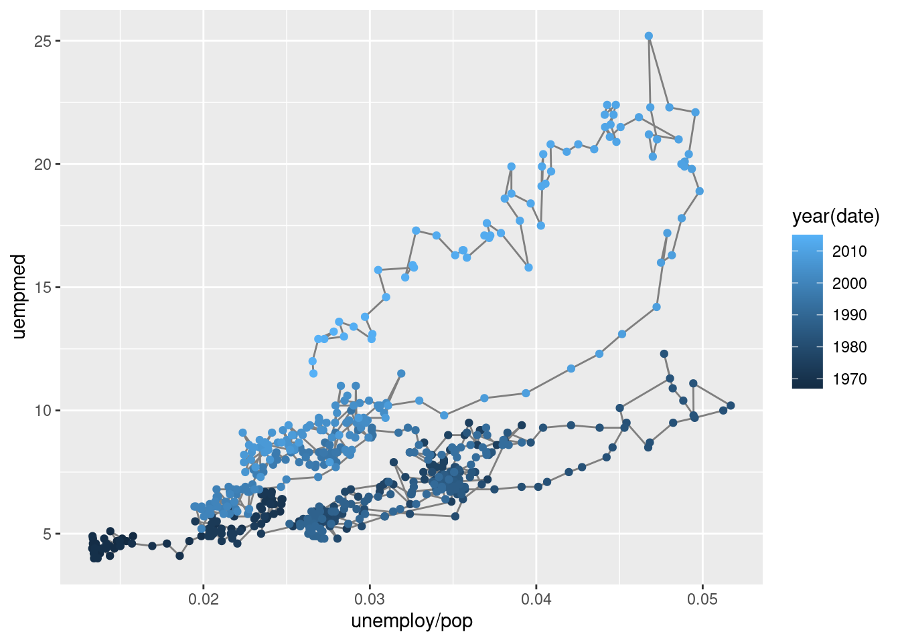

2.8 Geoms
The geom_point() geom gives a familiar scatterplot.
Other geoms include:
geom_smooth()which fits a smooth line to the data- check
helpto seegeom_smooth’s arguments likemethod,seorspan.
- check

geom_boxplot()which generates a box-and-whisker plot- check
helpto seegeom_boxplot’s arguments likeoutlierarguments, andcoefwhich adjusts the whisker length.
- check

- consider boxplot variants like
geom_jitterandgeom_violin


geom_histogramwhich generates a histogram andgeom_freqpolywhich generates a frequency polygon- check
helpto seegeom_histogram’s arguments likepositionandbinwidth.
- check
## `stat_bin()` using `bins = 30`. Pick better value with `binwidth`.
## `stat_bin()` using `bins = 30`. Pick better value with `binwidth`.
geom_barwhich generates a bar chart- check
helpto seegeom_bar’s arguments likepositionandwidth
- check

We’ll take a second here to talk about the stat argument. Note that in the first bar chart, the y-axis shows the number of observations labeled as count.
## # A tibble: 15 × 2
## # Groups: manufacturer [15]
## manufacturer n
## <chr> <int>
## 1 audi 18
## 2 chevrolet 19
## 3 dodge 37
## 4 ford 25
## 5 honda 9
## 6 hyundai 14
## 7 jeep 8
## 8 land rover 4
## 9 lincoln 3
## 10 mercury 4
## 11 nissan 13
## 12 pontiac 5
## 13 subaru 14
## 14 toyota 34
## 15 volkswagen 27What if you wanted to sum a certain value for each manufacturer, then you have to tell ggplot “don’t just return the number of observations, add up the values in this certain column”. You do this using the stat argument and by specifying a new variable for the y-axis. For instance, we might be interested in knowing the total price of all vehicles in the data set for each manufacturer. It may be interesting to see if four Land Rovers are more expensive than 14 Hyundais. (No disrepect to Hyundai drivers… I am one myself!) Unfortunately, price isn’t a variable in this dataset so, let’s use displ instead. The sum of displ isn’t particularly meaningful in real life, but it illustrates the use of the stat argument.
This graph below uses displ for y in the aesthetic and uses the stat of identity so that it sums the total displacement for each manufacturer.

This plot now shows the total displacement.
## # A tibble: 15 × 2
## manufacturer `sum(displ)`
## <chr> <dbl>
## 1 audi 45.8
## 2 chevrolet 96.2
## 3 dodge 162
## 4 ford 113.
## 5 honda 15.4
## 6 hyundai 34
## 7 jeep 36.6
## 8 land rover 17.2
## 9 lincoln 16.2
## 10 mercury 17.6
## 11 nissan 42.5
## 12 pontiac 19.8
## 13 subaru 34.4
## 14 toyota 100.
## 15 volkswagen 60.9geom_lineandgeom_pathwhich generates a line chart or path chart (useful for time series data)- check
helpto seegeom_line’s arguments likelineendandarrow
- check


To investigate these plots further, we can draw them on the same plot.
year <- function(x) as.POSIXlt(x)$year + 1900
ggplot(economics, aes(unemploy / pop, uempmed)) +
geom_path(color = "grey50") +
geom_point(aes(color = year(date)))